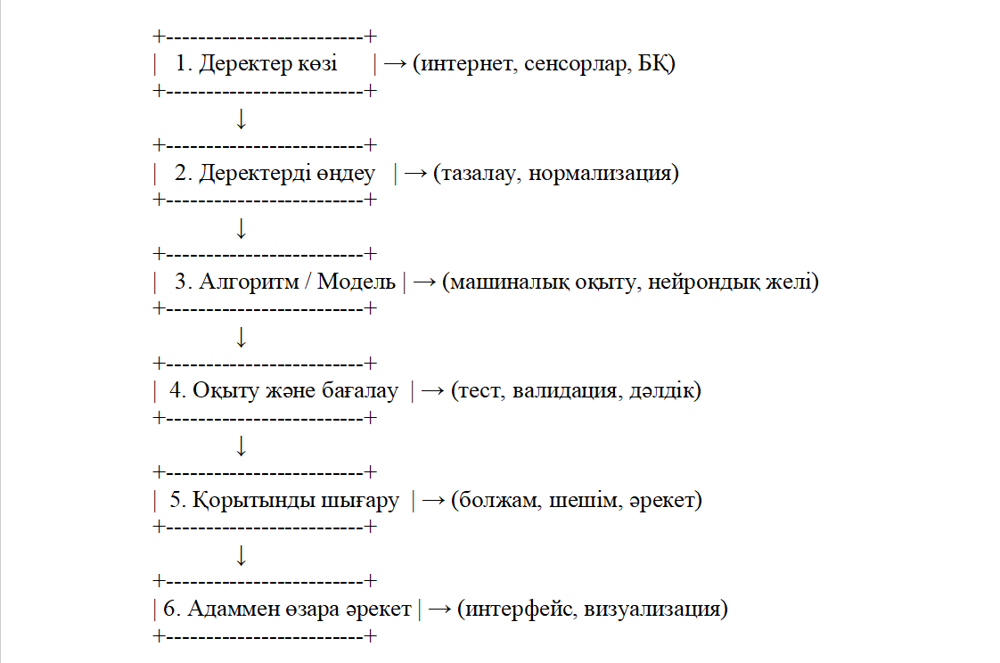

Деректер және алгоритмдер
Жасанды интеллект (ЖИ) – бұл машиналардың адам интеллектісіне тән тапсырмаларды орындауға қабілеттілігі. ЖИ-дің жұмыс істеу механикасы негізінен деректер мен алгоритмдерге сүйенеді.
ЖИ-дің жұмыс істеу механикасы
- Деректерді жинау және дайындау
ЖИ жүйелері үлкен көлемдегі деректерді пайдаланады. Бұл деректер құрылымдалған (мысалы, кестелер, сандық мәндер) немесе құрылымдалмаған (мәтіндер, суреттер, дыбыстар) болуы мүмкін. Деректерді алдын ала өңдеу қадамдарына мыналар жатады:
Тазарту: Қателіктер мен артық ақпаратты жою.
Қалыпқа келтіру: Деректерді біркелкі форматқа келтіру.
Бөлу: Деректерді оқыту және тестілеу жиынтықтарына бөлу. - Алгоритмдерді таңдау және қолдану
Алгоритмдер – бұл ЖИ жүйелерінің деректерден үлгілерді анықтап, шешім қабылдауына мүмкіндік беретін математикалық модельдер. Негізгі алгоритм түрлері:
Бақыланатын оқыту (Supervised Learning): Жиі қолданылатын әдіс, мұнда модель белгіленген деректерден үйренеді. Мысалы, электрондық пошталарды "спам" немесе "спам емес" деп жіктеу.
Бақыланбайтын оқыту (Unsupervised Learning): Белгіленбеген деректерден құрылымдарды анықтау. Мысалы, тұтынушыларды сатып алу әдеттері бойынша сегменттеу.
Күшейтілген оқыту (Reinforcement Learning): Агент қоршаған ортамен әрекеттесіп, әрекеттерінің нәтижесіне қарай үйренеді. Мысалы, ойын ойнау стратегияларын дамыту. - Модельді оқыту және бағалау
Оқыту процесінде алгоритмдер деректерден үлгілерді үйреніп, болжау жасау қабілетін дамытады. Модельдің тиімділігін бағалау үшін түрлі метрикалар қолданылады:
Дәлдік (Accuracy): Дұрыс болжаулардың жалпы болжауларға қатынасы.
Сезімталдық (Recall): Нақты оң нәтижелердің дұрыс анықталған үлесі.
Нақтылық (Precision): Дұрыс оң болжаулардың жалпы оң болжауларға қатынасы. - Жүйені енгізу және қолдану
Оқыту мен бағалау кезеңдерінен өткен соң, модель нақты әлемдегі тапсырмаларды орындауға енгізіледі. Мысалы, медициналық диагноз қою, қаржылық алаяқтықты анықтау немесе автономды көлік жүргізу.
ЖИ жүйелерінің құрылымы
Негізгі компоненттерге сипаттама
- Деректер көзі
Сырттан алынған ақпараттар: интернеттегі мәліметтер, сенсорлық құрылғылар, камералар, базалар;
ЖИ-дің «шикізаты». - Деректерді өңдеу
Деректердің сапасын жақсарту:
Тазалау (қателерді алып тастау)
Қалыпқа келтіру (бірдей форматқа келтіру)
Фильтрация (маңыздысын таңдау) - Модель немесе алгоритм
Негізгі "ми": шешім қабылдайтын логика.
Мысалдар: Decision Tree (Шешім ағашы), Neural Network (Нейрондық желі), SVM, KNN, Naive Bayes. - Оқыту және бағалау
Машина деректерді пайдаланып үйренеді.
Оқыту жиынтығы мен тест жиынтығы арқылы модельдің сапасы тексеріледі. - Қорытынды шығару (Inference Engine)
Жаңа мәліметке жауап береді (болжам немесе шешім).
Мысалы: фотоны қарап, бұл мысық па әлде ит пе – деп шешім қабылдау. - Адаммен өзара әрекет (интерфейс)
ЖИ-дің нәтижесін визуалды не тілдік түрде адамға жеткізу.
Мысалы: ChatGPT интерфейсі, Siri / Google Assistant сөйлесу модулі
Ұсынылатын бейнематериалдар
Machine Learning Algorithms Overview
(машиналық оқыту алгоритмдерінің негізгі түрлері)
How Does Artificial Intelligence Work?
(ЖИ жүйелерінің жұмыс істеу принциптері)